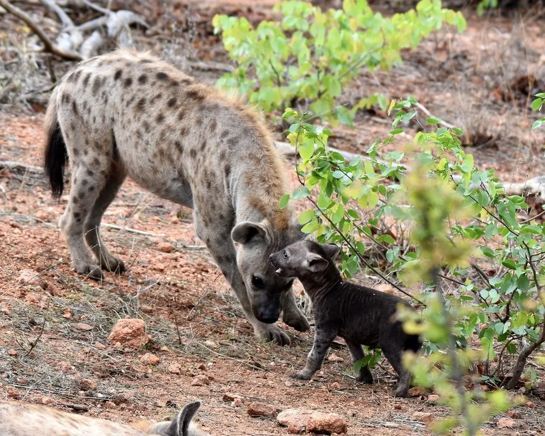

哺乳动物 · 动物界
斑鬣狗 Crocuta crocuta

非洲草原上群居的鬣狗，母系社会、雌性大于雄性，咬合力极强能咬碎骨头，也是高效的群体捕猎者。
- 分类
- 门脊索动物门纲哺乳纲目食肉目科鬣狗科属斑鬣狗属
- 栖息环境
- 稀树草原、疏林与半荒漠，可生活于靠近人类聚落的区域
- 地理分布
- 非洲撒哈拉以南，从埃塞俄比亚到南非的广阔地区
- 保护级别
- IUCN 无危（LC）
物种志
斑鬣狗体长 0.95–1.6 米，尾长 0.25–0.35 米，体重 40–86 kg，是鬣狗科中体型最大者。它的被毛为黄褐色至灰褐色，全身布满深褐色斑点，颈部有鬃毛；头部硕大，下颌发达，耳朵圆而直立，前肢比后肢长，肩部高耸。
斑鬣狗分布于非洲撒哈拉以南的稀树草原、疏林和半荒漠，常结成 5–80 只的群体。它是一种独特的母系社会：雌性体型大于雄性，在群体中占据支配地位，甚至拥有雄性化的外生殖器。斑鬣狗既成群捕猎角马、斑马、瞪羚，也抢夺狮子的猎物，强大的咬合力可以咬碎骨头、吸食骨髓。它们多在夜间活动，用气味标记领地；雌兽妊娠期约 110 天，每胎 1–4 仔。尽管常被视为“食腐者”，其捕猎能力在非洲食肉动物中名列前茅，种群总体稳定。
形态与习性
- 食性角马、斑马、瞪羚等，也取食腐肉并咬碎骨头
- 体长0.95–1.6 m，尾长 0.25–0.35 m
- 体重40–86 kg，雌性大于雄性
- 寿命野外约 12–20 年
- 繁殖妊娠期约 110 天，每胎 1–4 仔
- 社会结构母系社会，雌性占据支配地位
- 咬合力可咬碎大型动物的骨头
趣味知识
- 斑鬣狗是母系社会，雌性体型大于雄性并居于支配地位。
- 它的咬合力可咬碎骨头，是少数能取食骨髓的食肉动物。
- 斑鬣狗既会群体围猎，也会抢夺狮子等捕食者的猎物。
- 雌性斑鬣狗的外生殖器雄性化，外貌上很难区分性别。